My Work
Here is a collection of my work.
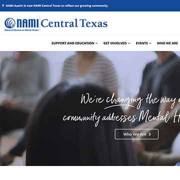
NAMICase Study:
A story about research informed design decisions.
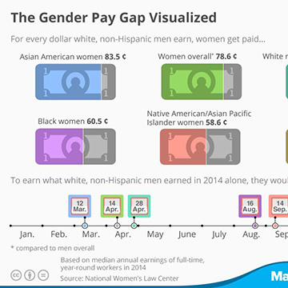
Payscale AppCase Study:
A story about research and staying focused on the user.
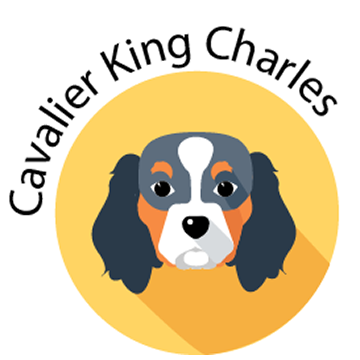
Finding YourDog Breed:
A story about finding compatible dog breeds.
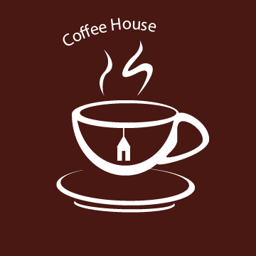
Coffee HouseCase Study:
A story about finding the best coffee on the road.
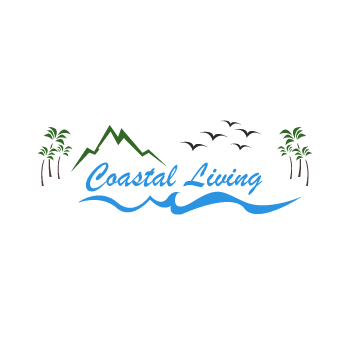
Coastal LivingCase study:
A story about finding your dream beach house.
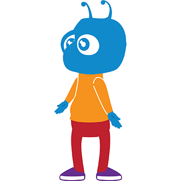
BAMM AppCase Study:
A story about incorporating music for blind students.
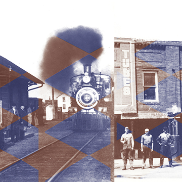
Thiel&ThielCustom Edit:
A story about customizing old images.
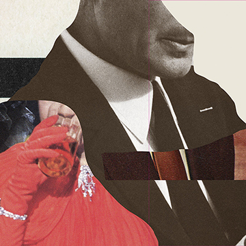
ItalicMural:
A story about setting up a large file to print as a mural.
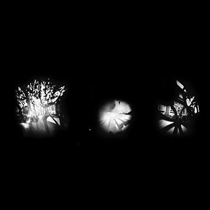
Pinhole CameraExperiment:
A story about making and experimenting with a pinhole camera.
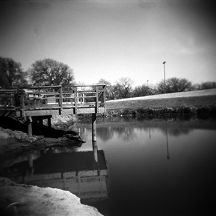
Holga CameraExploration:
A story about the OG square format Holga Camera.
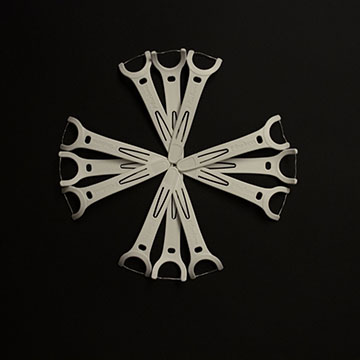
Photo EmulationProject:
A story about emulating other photographers.
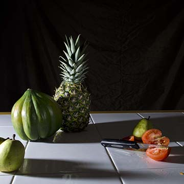
Murdered TomatoStill Life:
A story about using dramatic lighting to create a story.